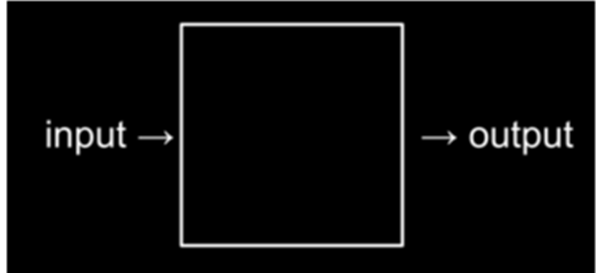

¿Que es el pensamiento computacional?
¿Qué es el pensamiento computacional?
Definición
El pensamiento computacional es una forma de resolver problemas y abordar desafíos utilizando técnicas y conceptos fundamentales de la ciencia de la computación.
El objetivo principal es desarrollar habilidades de pensamiento crítico y lógico que sean fundamentales para comprender y resolver problemas en el ámbito de la informática. Se basa en la aplicación de la lógica, el razonamiento y la capacidad de descomponer problemas complejos en componentes más pequeños y manejables.
El pensamiento computacional implica un enfoque analítico y estructurado para resolver problemas, con énfasis en la resolución algorítmica.
Se centra en la capacidad de diseñar y seguir pasos o instrucciones precisas para llegar a una solución.
Esencialmente, la programación de computadoras equivale a pensar en la resolución de un problema como el proceso de tomar alguna entrada (un problema que queremos resolver) y generar alguna salida (la solución a nuestro problema), resolviendo así dicho problema. Lo que sucede entre la entrada y la salida, es lo que podríamos llamar una caja negra, que por ahora será una incógnita que develaremos a lo largo de la materia.
4
Pero para comenzar, necesitaremos una forma de representar entradas y salidas, para que podamos almacenar y trabajar con información de manera estandarizada. Profundizaremos el tema, más adelante, en la bibliografía “Representación de datos en la computadora”.
Componentes del pensamiento computacional
Algunos elementos clave del pensamiento computacional que ayudan a desarrollar habilidades de resolución de problemas y pensamiento lógico en el contexto de la informática son:
-
Resolución de problemas a partir de la descomposición: consiste en descomponer problemas complejos en subproblemas más pequeños y manejables. Esto ayuda a comprender mejor el problema y permite abordar cada parte de forma individual. Se exploran técnicas como la división y conquista, la recursividad y el enfoque iterativo.
-
Patrones y reconocimiento de patrones: el objetivo es identificar patrones y regularidades en los datos o en el problema en sí. Esto puede ayudar a simplificar el problema y proporcionar una base para encontrar soluciones.
-
Abstracción: la abstracción implica la capacidad de identificar los aspectos esenciales e importantes de un problema y omitir, separar, los detalles irrelevantes y no esenciales a partir del estudio de técnicas de abstracción para simplificar la resolución de problemas y crear modelos más manejables. Esto permite enfocarse en los conceptos clave y simplificar la comprensión del problema.
-
Algoritmos: los algoritmos son la base para implementar soluciones en programación a partir del diseño de una serie de pasos o de instrucciones lógicas que resuelven un problema de manera eficiente y sistemática. Es decir, son secuencias ordenadas de pasos o de instrucciones lógicas que describen cómo resolver un problema. Es fundamental aprender a diseñar, analizar y mejorar algoritmos a partir de la aplicación de las buenas prácticas de programación y de la aplicación de las diferentes metodologías de las ciencias de la computación.
-
Estructuras de datos: las estructuras de datos son maneras de organizar y almacenar datos en la memoria de una computadora. Se exploran conceptos como listas, arreglos, pilas, colas y árboles, y se estudia cómo elegir la estructura adecuada para un problema dado.
-
Pensamiento lógico: el pensamiento lógico es esencial en la programación. Se aprende a formular proposiciones lógicas, utilizar operadores lógicos (AND, OR, NOT), construir tablas de verdad y aplicar principios de lógica para la resolución de problemas.
-
Programación: aunque la programación puede ser un tema en sí mismo, en la introducción al pensamiento computacional se puede proporcionar una introducción básica a la programación. Se pueden utilizar lenguajes de programación como Python o Scratch para familiarizarse con conceptos como variables, condicionales, bucles y funciones.
-
Paralelismo y concurrencia: a medida que los sistemas informáticos se vuelven cada vez más paralelos, es importante comprender cómo manejar la concurrencia y los desafíos asociados. Se pueden introducir conceptos como hilos de ejecución, sincronización y comunicación entre procesos.
Info
El objetivo principal del pensamiento computacional es desarrollar habilidades de pensamiento crítico y lógico que sean fundamentales para comprender y resolver problemas en el ámbito de la informática.
Aplicaciones del pensamiento computacional
-
Resolución de problemas en la programación.
-
Resolución de problemas en matemáticas, ciencias y otras disciplinas.
-
Diseño de sistemas complejos.
-
Desarrollo de soluciones innovadoras para problemas cotidianos.
Ejemplos de pensamiento computacional
-
Resolver un rompecabezas o acertijo.
-
Crear un flujo de trabajo para realizar una tarea repetitiva de manera eficiente.
-
Analizar los datos para identificar patrones y tendencias.
-
Desarrollar un plan para resolver un problema de programación complejo.
Beneficios de pensamiento computacional
-
Mejora la capacidad de resolución de problemas y la creatividad.
-
Ayuda a entender mejor el funcionamiento de los sistemas complejos.
-
Desarrolla habilidades de pensamiento crítico y lógico.
-
Facilita la comunicación y colaboración en proyectos de equipo.
Herramientas para desarrollar el pensamiento computacional
A continuación, te presentamos algunas herramientas que pueden ayudarte a desarrollar el pensamiento computacional y mejorar tus habilidades. Estas herramientas puedes clasificarse según su tipo:
-
Juegos y acertijos que requieren pensamiento crítico y lógico
-
Ejercicios de programación y algoritmos
-
Técnicas de descomposición y abstracción
-
Ejercicios de reconocimiento de patrones
Lenguajes de programación: Aprender a programar en lenguajes como Python, Java, C++ o JavaScript es una excelente manera de desarrollar el pensamiento computacional. Estos lenguajes te permiten escribir algoritmos y solucionar problemas de manera estructurada.
**Scratch: Es un entorno de programación visual desarrollado por el MIT especialmente diseñado para principiantes. Con Scratch, puedes arrastrar y soltar bloques de código para crear historias interactivas, juegos y animaciones, lo que te ayuda a comprender los conceptos básicos de la programación.
Pilas Bloques: Similar a Scratch, es un entorno de programación visual basado en bloques. Puedes utilizarlo para crear programas y algoritmos de manera interactiva, arrastrando y soltando bloques para formar secuencias lógicas.
App Inventor: Desarrollado también por el MIT, App Inventor es una herramienta que te permite crear aplicaciones móviles para dispositivos Android sin necesidad de tener conocimientos avanzados de programación. Puedes diseñar interfaces y programar la funcionalidad de tus aplicaciones utilizando bloques de código.
Minecraft: Este juego de construcción y aventura puede ser utilizado como herramienta para desarrollar el pensamiento computacional. Minecraft: Education Edition incluye características específicas para la programación, donde puedes crear y ejecutar comandos y scripts para automatizar tareas dentro del juego.
Code.org: Es una plataforma educativa que ofrece cursos gratuitos de programación y recursos para enseñar pensamiento computacional a través de juegos y actividades interactivas. Code.org está dirigido tanto a estudiantes como a educadores.
Robótica educativa: Utilizar kits de robótica como LEGO Mindstorms o Arduino puede ser una excelente manera de aplicar el pensamiento computacional en la práctica. Estos kits te permiten construir robots y programar su comportamiento, fomentando el pensamiento lógico y la resolución de problemas.
¡Para recordar! que más allá de las herramientas específicas, desarrollar el pensamiento computacional implica adoptar una mentalidad analítica y orientada a la resolución de problemas. Es importante practicar la lógica, el razonamiento algorítmico y la abstracción en diferentes contextos, tanto dentro como fuera de las herramientas mencionadas.
Ejercicios
Resumen
-
El pensamiento computacional no se limita a la programación o a la resolución de problemas relacionados con la informática. Sus principios y enfoques se pueden aplicar en diversas disciplinas y contextos, como la resolución de problemas matemáticos, la toma de decisiones, la planificación y organización de tareas, la resolución de problemas científicos y muchos otros ámbitos.
-
Los principios del pensamiento computacional pueden ser enseñados a personas de todas las edades.
-
Su enseñanza se centra en desarrollar habilidades de pensamiento crítico y lógico y puede ser integrada en diferentes materias y disciplinas.
Success
Además de ser una habilidad esencial en la programación, el pensamiento computacional fomenta el desarrollo de habilidades de resolución de problemas, el pensamiento crítico, la creatividad, la capacidad de abstracción y la capacidad de colaboración y trabajo en equipo.